W-ishi
wish + ishi (石, Japanese for “stone”): a wishing stone seniors can turn to when they need help.
A Personal Safety Device for Seniors Living Independently.
A discreet token that detects falls, lets the senior cancel and reaches the right person wherever they are, without cameras, microphones or constant tracking.
Meet the team
Abstract
Seniors aged 70 to 80 living independently in Singapore are at risk when an emergency, such as a fall, happens away from supervision, yet existing alarms are often costly, stigmatising or reliant on constant tracking. In September 2026 a resident waited two hours for help after her call button produced only an automated reply. This interim report presents W-ishi, a discreet safety token that detects falls automatically or raises an SOS at the press of a button. After a 15-second cancel window it sends an alert with the senior’s location over 4G and escalates from family to care staff to neighbours if no one responds. Co-design workshops with 40 residents at Lions Befrienders and Harmony Village shaped the design. The prototype caught 91% of simulated falls and ignored 90% of everyday movements. Outdoor location was accurate to about 5 m, and alerts reached caregivers in about 24 s (10/10 trials). Two main gaps remain: indoor location succeeded in only 2 of 10 trials, and a current draw of about 31 mA is more than 11 times the power target. Semester 2 addresses these through a low-power sensor and battery redesign, a custom PCB, drop and splash testing, and wear trials at both sites.
Problem Background (Dhruv)
2.1Singapore’s Ageing Population
Singapore is among the fastest-ageing societies in Asia. The proportion of citizens aged 65 and above is projected to reach about one in four (23.9%) by 2030 (Ministry of Health [MOH], n.d.; National Population and Talent Division [NPTD], 2025). The number of citizens aged 80 and above rose by about 60% between 2015 and 2025, from 91,000 to 145,000 (NPTD, 2025). Health and support systems will therefore need to serve not only more seniors but older and frailer ones, whose care needs are greater.
This growth has been accompanied by a shift in how seniors live. In 2024, around 87,000 residents aged 65 and above lived alone (MOH, 2025; iMalive, 2025), up from about 58,000 in 2018, an increase of half in six years (Singapore Department of Statistics, 2025). Living alone is not in itself a risk, and for many seniors it reflects a valued preference for independence. However, it removes the person most likely to notice when something goes wrong. For these seniors, how quickly help arrives in an emergency depends on whether they can raise the alarm themselves and whether someone is available to respond.
Falls are the emergency in which this dependence matters most. Falls account for 85% of all elderly trauma cases seen in Singapore's emergency departments (Matchar et al., 2017) and for 40% of injury-related deaths (Ang et al., 2020). About one in three community-dwelling adults aged 65 and above falls at least once a year, and many are "silent fallers" who do not report the fall unless they are injured (Ang et al., 2020). For a senior living alone, an injury that prevents them from getting up or reaching for a phone can mean lying on the floor for a long time, which may be associated with worse outcomes than the fall alone (CNA Insider, 2024).
Together, these three trends define the problem this project addresses: a growing population of older seniors, more and more of whom live alone, facing a common hazard that often leaves them unable to call for help.
2.2The National Response: Age Well SG
Singapore's policy response to an ageing population rests on the 2023 Action Plan for Successful Ageing, which is organised around three themes: Care, Contribution and Connectedness (MOH, 2023a). Its flagship programme is Age Well SG, a national programme launched in November 2023 and led jointly by the Ministry of Health, the Ministry of National Development and the Ministry of Transport. Its stated aim is to help seniors age actively, stay socially connected and be cared for within their own communities (MOH, 2023b).
The programme can be broadly categorised into five areas: Active ageing, Living environment, Senior volunteerism, Care support and Age-well neighbourhoods. This project focuses on two of these, because they most directly shape how seniors live independently day to day: Active ageing, which supports seniors in the community through Active Ageing Centres, and Living environment, which supports seniors at home through Community Care Apartments.
Active Ageing Centres (AACs)
AACs are drop-in centres in residential estates that offer active ageing programmes, befriending and care referrals. The AAC network grew to over 230 centres islandwide (MOH, 2024), with the goal that eight in ten seniors will have an AAC near their home (Age Well SG, n.d.). AACs reduce isolation by giving seniors a regular reason to leave home and a place where staff and peers notice when someone is missing.
Community Care Apartments (CCAs)
CCAs are assisted-living public housing for seniors, built by the Housing & Development Board (HDB). They combine senior-friendly design with a compulsory Basic Service Package that includes 24-hour emergency monitoring and response, basic health checks and an on-site community manager (MOH, 2020). The first development, Harmony Village @ Bukit Batok, was launched in February 2021 with 169 units (Housing & Development Board, 2021). CCAs therefore build emergency response into the home itself. In 2026, to reduce service fees, the emergency alert device was made optional, and residents who decline it rely on CCA staff for 24-hour support (MOH, 2026).
In short, both models depend on a person to notice a problem and respond. AACs do this through scheduled contact, and CCAs through a small pool of on-site staff.
2.3Field Sites
We worked with two partner sites that represent the two main community care models in Singapore for seniors living independently: Active Ageing Centres (AACs), run here by Lions Befrienders at Clementi, and Community Care Apartments (CCAs), represented by Harmony Village @ Bukit Batok. Both sites hosted our co-design workshops (Section 3.1).
2.3.1Lions Befrienders
Based on our site visits and its own description (Lions Befrienders Service Association, 2025), Lions Befrienders runs AACs where seniors exercise, cook and socialise. The centres also have self-service stations where seniors can check their BMI and blood sugar levels (Figure 2.1). Beyond this, its staff monitor more vulnerable seniors through daily tablet check-ins (Figure 2.2) where a missed check-in is escalated to family, a neighbour or staff. This means a senior who falls is only found after a scheduled check-in has been missed, and seniors with limited mobility, who are most at risk, are often the least able to attend centre activities at all.
2.3.2Harmony Village
Harmony Village @ Bukit Batok is a Community Care Apartment development (Vanguard Healthcare, n.d.) housing about 189 residents, 80% of whom live alone (EIM-306, n.d.; Section 3.1). They are supported by three care staff per shift, but as some of them need to man the counters, only one is typically free to respond, an effective ratio of one care staff member to 189 residents (1:189). Every unit was fitted with a call button linked to 24-hour emergency response, but a few staff cover many residents, so how quickly help arrives depends on whether someone is free to respond.
2.4Motivating Incident: The 2 September Fall
- 12 PMShe falls in the shower and presses her call button
- Moments laterShe gets an automated response, but nobody comes
- Next 2 hoursShe drags herself to the front door
- 2 PMNeighbours hear her and help
- 3 PMThe Singapore Civil Defence Force (SCDF) takes her to hospital
The limits of these systems became clear at Harmony Village on 2 September 2026, when an 85-year-old resident who lived alone fell in her shower (Yap, 2026). She pressed her call button as the system intends, yet roughly three hours passed between her call for help and reaching hospital.
This does not show that any single person or organisation failed. Staff work under the constraints described in Section 2.3.2, and the alert reached the system as designed. Instead, it shows a structural gap: raising an alarm and receiving help are separate steps, and nothing ensures the second happens when the usual responder is unavailable. She had no way to know whether help was coming or to reach anyone else, and was found only because neighbours happened to be nearby. The incident shows three gaps:
Detection: The system relied on the resident raising the alarm herself.
Response: The alert went to one point of contact with no fallback.
Access: She could get help only by moving to where someone might hear her.
2.5Stakeholder Mapping (Genieve)
Our key stakeholders were mapped according to their power over, and interest in, the adoption of a personal safety device. The primary stakeholders identified were the seniors themselves and their trusted responders, who may be involved in emergency response. Care staff, trusted neighbours and volunteers were also considered, as they could form part of the seniors’ support network, together with the organisations and regulators involved in implementation.
User Research and Problem Definition (Shishir)
3.1Co-design Workshops: Method (Genieve)
We ran co-design workshops to ground the design in seniors’ lived experience rather than our assumptions. Seniors first discussed three broad areas, safety, self-care and community building, before we narrowed the focus.
Three workshops were held: Harmony Village (HV) on 24 August with 10 seniors, Lions Befrienders (LB) on 26 August with 17 and HV again on 27 August with 13. The 40 seniors were aged 61 to 91 with an average age of 76, and 85% were women. Each two-hour session had four activities.
“A day in my life”: seniors mapped their daily routines and where they spend their time.
“When I need help”: seniors said how they would respond to emergency scenarios and whom they would approach.
“My ideal helper”: seniors imagined an ideal helper free of the limits of today’s technology.
Concept demonstrations: seniors judged early concepts on practicality, ease of use and willingness to adopt them.
3.2Key Findings from 40 Residents
Eighty per cent of the residents live alone. HV has one care staff member for every 189 residents, and residents described staff check-ins as happening “seldom or never”. Table 3.1 lists the preferences raised most often, counted only when a participant stated them directly.
Hover a bar for the share of residents.
The two strongest findings are that residents want to feel safe without being watched (16/40) and want family, not staff, as their first contact (14/40). Residents want help to reach them quickly, yet they do not want to be monitored to make that possible, and they trust their families more than the staff assigned to them. Together these findings define the safety gap that this project addresses: independent seniors have no reliable way to reach help quickly in a real emergency without being constantly monitored or depending on staff who are not consistently available.
Why we focused on falls. Falls were the emergency residents raised most directly. P04 was “concerned that she may be unable to reach the alarm after a fall”. P33 “was strongly receptive to fall detection” and suggested a 15-second grace period to cancel. The 2 September fall at HV (Section 2.4) showed the same risk. Automatic fall detection became the core of W-ishi, with an SOS button kept for other emergencies.
3.3Key Insights
The findings group into five insights. Each one is a tension that residents are trying to resolve.
Scroll sideways and tap a card to read the evidence.
3.4Problem Statement
Who: Seniors aged 70 to 80 living independently. What: A device that activates only in an emergency and escalates to the right person wherever they are. How: Affordably and without constant tracking.
How might we help seniors aged 70–80 reach the right person quickly in a real emergency, regardless of location, in a way that is affordable, protects their dignity and does not require constant tracking?
3.5How Our Key Insights Answer the Problem Statement
Each insight yields one design principle with a measure to check it (Table 3.2).
| Key insight | Principle | What it means for W-ishi | How we check it |
|---|---|---|---|
| Trust Gap | Responsive | Alerts go to contacts the senior chooses and escalate if unanswered | Time to first acknowledgement |
| Privacy–Detection Paradox | Privacy | No camera or microphone; location only during alerts | Parts list and firmware review |
| False Alarm Dilemma | Autonomy | A 15-second cancel window before every alert | Share of false alarms cancelled |
| Accessibility Barrier | Accessible | About $20 to buy and under $1 a month | Cost against competitors |
| Stigma Trap | Dignity | Looks like an accessory, not a medical alarm | Residents’ likelihood-to-wear ratings |
Solution Exploration (Shishir)
4.1Existing Products (Dhruv)
To find the gaps W-ishi should fill, we reviewed four kinds of existing safety device: item trackers, smartwatches, safety pendants and home fall detection systems (Figure 4.1), then compared them with W-ishi feature by feature (Table 4.1).
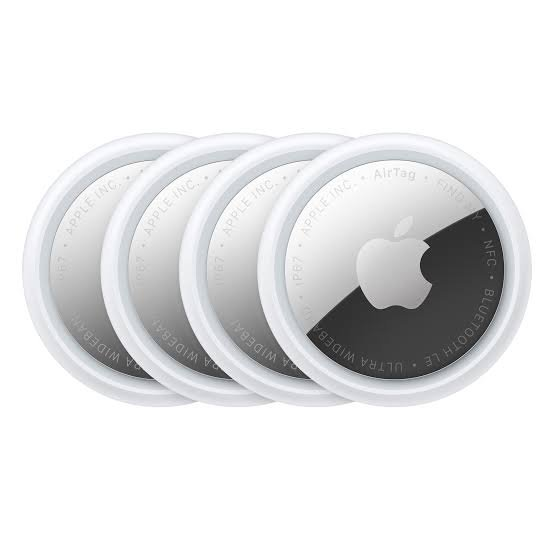
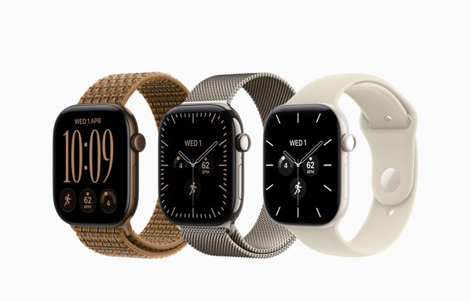
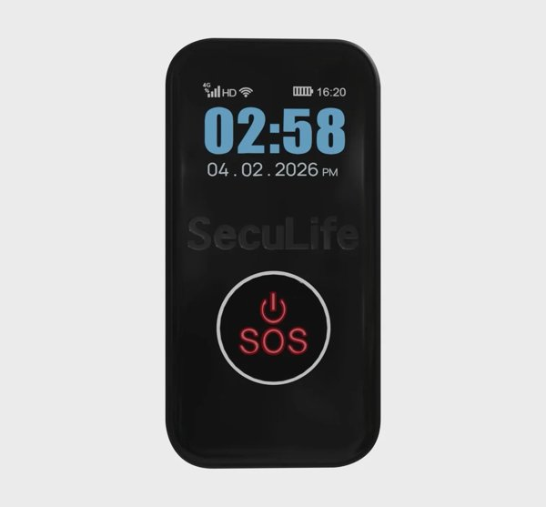
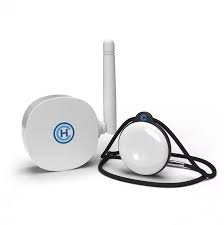
Figure 4.1. The four products we compared (Apple, 2021, 2026a; HoneyCare, 2023; SecuLife, n.d.).
| Feature | W-ishi | Apple AirTag | Apple Watch 12 | Seculife Pendant | MyGuardian Home |
|---|---|---|---|---|---|
| Price | Target ≈$20 | $45 | $599 | $114 + $32/month | $230 |
| Tracks only when activated | ✔ | ✘ | ✘ | ✘ | ✘ |
| Automatic fall detection | ✔ | ✘ | ✔ | ✔ | ✔ |
| Tactile SOS button | ✔ | ✘ | ✘ | ✔ | ✔ |
| Works without a smartphone | ✔ | ✘ | ✘ | ✔ | ✔ |
| Direct-to-family routing | ✔ | ✘ | ✔ | ✔ | ✔ |
| No recurring subscription | ✔ | ✔ | ✘ | ✘ | ✔ |
| Battery life (days) | 7–15 (estimated) | 300–600 | 1–2 | 15–30 | 180–240 |
4.2From Core Values to Target Specifications
Table 4.2 links each core value from Section 3.5 to what residents need, the workshop evidence behind it, how the products in Section 4.1 fall short, what W-ishi builds in response and the target it must meet.
| Core value | What residents need | Evidence from workshops | Competitors today | What we build | Target specifications |
|---|---|---|---|---|---|
| Privacy | Feel safe without being watched | 16/40 | Always-on location (AirTag, Seculife, Apple Watch) |
|
|
| Autonomy |
| 14/40 7/40 | Instant dispatch to a call centre (general safety pendants) |
|
|
| Dignity | Not be seen as frail | Stigma Trap | Medical-looking pendants, touchscreen watches | Discreet accessory | Looks like a keychain, torch or keycard |
| Responsive | Reach help wherever they are | 1:189 staff | Phone-tethered (AirTag, Apple Watch) or 150 m home hub (MyGuardian) |
|
|
| Accessible | Around $20 upfront with little to no subscription or maintenance cost | 6/40 | From $45 (AirTag) to $114 (Seculife), plus a possible subscription ($32/month) | One-time price |
|
Novelty: No existing product combines automatic fall detection, a tactile SOS button, location only during an alert and routing to family that escalates when no one answers. W-ishi aims to offer all four for a target price of about $20.
4.3Specification Table
Table 4.3 gathers these targets into one measurable list. It adds two physical constraints from the workshops: a weight of no more than 40 g, found in our user testing and in adherence research (Ding et al., 2024), and a button found by touch and pressed with 2 to 3 N, suited to older adults with arthritis or tremors (Harte et al., 2014). Section 7.4 tests the prototype against it.
| Specification | Target | Core value |
|---|---|---|
| Fall detection | ≥ 90% of falls caught and ≥ 90% of daily movements ignored | ResponsiveAutonomy |
| Outdoor location | ≤ 10 m | Responsive |
| Alert delivery | ≤ 30 s to Tier 1 | Responsive |
| Average current | ≤ 2.7 mA (7 days on 500 mAh) | Accessible |
| Weight | ≤ 40 g | Dignity |
| SOS button | 2–3 N with ≥ 90% success on the first press | Autonomy |
| LED cues | Understood by ≥ 4 of 5 seniors | Autonomy |
| Family set-up | ≤ 5 min unaided | Accessible |
| Durability | Survives a 1 m drop and splashes | Responsive |
| Privacy | No camera or microphone; location only during alerts | Privacy |
| Cost | ≈$20 per unit and < $1 per month | Accessible |
Concept Generation and Selection
5.1Morphological Analysis (Dhruv)
We generated options for each sub-function from the competitor review and workshop brainstorming (Table 5.1). Some sub-functions take several options that work together: the SOS button and fall detection cover seniors who can and cannot raise the alarm.
| Sub-function | Option A | Option B | Option C | Option D | Why? |
|---|---|---|---|---|---|
| Trigger mechanism | Physical SOS button 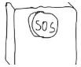 | Voice activation 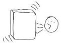 | Fall detection 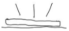 | Button and voice 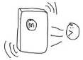 | SOS button: very easy to use. Fall detection: covers the main emergency we target. |
| Physical accessory | Token 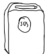 | Clip-on 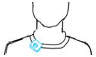 | Wrist-worn 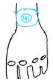 | Walkie-talkie 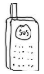 | Customisable, and preserves dignity by not attaching it to the body. |
| Sub-function | Option A | Option B | Option C | Option D | Why? |
|---|---|---|---|---|---|
| Cancellation method | Physical cancel button 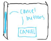 | Countdown window 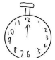 | Voice cancellation 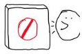 | Responder verification | Gives tactile feedback and autonomy to the senior. |
| Privacy | On-demand location | Local processing 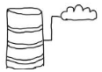 | User-triggered disclosure | No camera or microphone 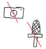 | 40% of surveyed residents do not want any active surveillance. |
| Power | Coin cell (CR2032) | Magnetic charger 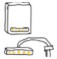 | Qi wireless charging | Wired charging (micro-USB or USB-C) 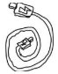 | Easy to plug in and does not require finger dexterity. |
| Sub-function | Option A | Option B | Option C | Option D | Why? |
|---|---|---|---|---|---|
| Obtaining location | GPS on activation 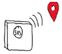 | Phone-assisted 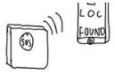 | Bluetooth Low Energy (BLE) | Fixed at home 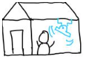 | Eliminates the anxiety about continuous tracking that many seniors share. |
| Sending alerts | SMS 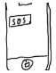 | Automated call 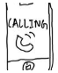 | App notification 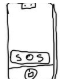 | Two-way voice 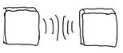 | Enables features such as setting escalation tiers. |
| Responders | Family | Care staff 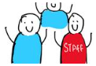 | Neighbours | Emergency services | A three-tier system means the senior is not left helpless if one party is unreachable. |
| Sub-function | Option A | Option B | Option C | Option D | Why? |
|---|---|---|---|---|---|
| Fall detection | 6-axis inertial measurement unit (IMU) 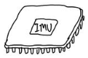 | Barometric pressure sensor 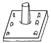 | Piezoelectric contact sensor 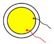 | Falls are spatial, kinematic events rather than simple structural impacts. | |
| Vital signs | Optical heart rate sensor | Skin conductance sensor 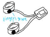 | None selected: we did not see the need to track vital signs. |
Combining options produced three concepts: a smart insole module, a modular everyday safety companion and a walking aid attachment.
5.2Selection Rationale (Genieve)
We assessed each concept against the five design principles (Table 5.2).
| Concept | Strength | Limitation | Principles supported | Decision |
|---|---|---|---|---|
| Smart insole module | Unobtrusive and nothing extra to carry | Not worn at home, where many falls happen | PrivacyDignity | Rejected |
| Modular everyday safety companion | Carried or clipped many ways, for any mobility | Protects only when it is carried | ResponsiveAutonomy PrivacyDignity | Selected |
| Walking aid attachment | Built into an object seniors already use daily | Excludes seniors who walk unaided | AutonomyDignity | Merged into the companion |
The modular companion fits seniors’ habits (Autonomy) and lets each choose how visible it is (Privacy, Dignity). The walking aid idea lives on as a round clip (Section 6.1.4).
Detailed Design
6.1Outer Shell Design (Genieve)
The token has a rigid base and lateral faces, soft fabric front and back panels, a single silicone button, a downward-facing status LED, charging contacts on the back and interchangeable attachments (Figure 6.1). Its outer shell was shaped by materials, ergonomics (Autonomy), discreet design (Privacy) and lifestyle aesthetics (Dignity), covered in turn below.
6.1.1Material Consideration
Materials were chosen with the Ashby method (Ashby, 2017) through four stages: translate each part’s function, constraints and objectives, screen out unsuitable materials, rank the rest on performance, and check cost and manufacturability. The shell was split into three regions, the rigid base and lateral faces, the soft front and back panels and the tactile button, each with a prototype and a commercial choice (Table 6.1).
| Component | Material | Key properties | Manufacturing |
|---|---|---|---|
| Rigid base and lateral faces | Polylactic acid (PLA) | Rigid and inexpensive; brittle and heat-sensitive | Fused deposition modelling (FDM) printing |
| Polyethylene terephthalate glycol (PETG) [P] | Tough, moisture-resistant, affordable | FDM printing | |
| Polycarbonate–acrylonitrile butadiene styrene (PC-ABS) [C] | Impact-resistant, dimensionally stable | Injection moulding | |
| Soft front and back panels | Thermoplastic polyurethane (TPU) | Flexible, rubber-like, abrasion-resistant | FDM printing |
| Foam-backed polyester [P] | Soft, cushioned, easy to fabricate | Cutting and bonding | |
| Woven microfibre polyester [C] | Premium textile feel, lifestyle look | Lamination or bonding | |
| Tactile button | Silicone rubber [P, C] | Elastic, compressible, suits gaskets | Gasket moulding |
Rigid base and lateral faces: PETG was chosen for prototyping over PLA. It is tough, rigid, moisture-resistant and easy to print by FDM, and the geometry can change without expensive tooling (Prusa Research, n.d.). For production, PC-ABS was chosen for its impact resistance, dimensional stability and suitability for injection moulding (Covestro, n.d.). Its stability matters most at the detachable attachment interface.
Soft front and back panels: The panels make the token softer to hold and less clinical. Foam-backed polyester was chosen for prototyping as it is cheap and easy to cut, shape and bond. Woven microfibre polyester was preferred commercially for its refined texture and potential abrasion resistance, which will be checked with the Martindale method (International Organization for Standardization [ISO], 2016). TPU was rejected: it is flexible and abrasion-resistant but feels rubbery rather than like fabric.
Tactile button: Silicone rubber is used in both builds. Its flexibility and elastic recovery let it deform under light pressure and return to shape, and it can also act as a seal around the switch. Recovery after repeated presses will be checked by compression set testing (ISO, 2019).
Attachments: The attachments bend and carry load repeatedly, so they need elastic deformation and recovery, snap-fit retention and frictional grip rather than the shell’s properties. Polyamide 12 (PA12) nylon made by selective laser sintering (SLS) was chosen for prototyping the clips for its toughness and controlled elastic deformation, and the integrated loop is printed in PETG or PA12. Commercially, the integrated loop uses PA12, the flat clip polyoxymethylene (POM, or acetal) and the round clip PA12 with a TPU gripping liner.
Water resistance: The rigid and elastomeric materials absorb little water and are not readily degraded by incidental moisture, but the textile panels do not help with waterproofing. Water may still enter at the button, charger, detachable top and housing seams, so the assembled shell will be tested to IEC 60529 (International Electrotechnical Commission [IEC], 2013).
6.1.2Ergonomics
Autonomy The shell follows three of the seven principles of universal design (Connell et al., 1997): low physical effort, minimising the strength and repeated movements needed; intuitive operation, reducing the complexity and precision needed; and tolerance for error, minimising accidental actions and their consequences.
Each part: what it must do, why the user needs it, the options we compared and our choice.
Shape AutonomyDignity
What it must do: hold all the electrical components in a size seniors can carry.
User need: seniors should use it without help (Autonomy), and it must not look like a medical device (Dignity).
How we compared: how easy each shape is to hold and to pocket, and how closely it resembles a medical device.
| Shape | Pros | Cons |
|---|---|---|
| Long cuboid (25 × 25 × 120 mm) | Easy to hold and pocket; looks like a lipstick or torch | Visually larger |
| Thick card (60 × 8 × 16 mm) | Fits a pocket and looks like a key card | Not nice to hold |
| Matchbox (60 × 45 × 30 mm) | Most compact | Harder to pocket and hold |
| Pebble (≈75,000 mm³) | Nice to hold; least medical | Harder to put in a purse or pocket |
Choice: of four shapes, seniors chose a 25 × 25 × 120 mm long cuboid for its grip and pocketability (Figure 6.2, Section 7.3.5). Smooth, rounded edges and the light form make it easy to hold and carry, so it needs little physical effort.
Weight AutonomyDignity
What it must do: be light enough to carry without hindrance while leaving room for a battery that lasts at least seven days.
User need: it should not hinder seniors’ movement (Autonomy), and they should not be reminded of it until they need it (Dignity).
How we compared: the battery each weight supports and how seniors felt about each weight.
| Weight | Battery it supports | Verdict |
|---|---|---|
| 30 g | 200 mAh, about 7 days | Prototype |
| 40 g | 500 mAh, about 15 days | Chosen |
| 50 g | 1,000 mAh, about 30 days | Prototype |
| 60 g | 1,500 mAh, about 45 days | Prototype |
Choice: weight trades comfort against battery size. A pilot study of older adults suggests about 40 g (Ding et al., 2024), though preferences vary, and our clay models of 30 to 60 g set the same ceiling of 40 g (Figure 6.3), which fits a 500 mAh cell. Keeping it light keeps the physical effort of carrying it all day low.
Charging AutonomyDignityPrivacy
What it must do: be easy for arthritic hands and weak eyesight and keep the case sealed against water.
User need: seniors should charge it without help (Autonomy), charging should fit into daily life (Dignity), and the cable must not carry data (Privacy).
How we compared: ease of use for seniors, water sealing, and the parts and cost each option adds.
| Option | Connection | Ease for seniors | Verdict |
|---|---|---|---|
| USB-C | Small port | Fiddly | Alternative |
| Qi wireless | Rest on a pad | Easy, but adds a coil, heat and cost | Rejected |
| Replaceable coin cell | Swap the battery | Hard, and cannot power the radio | Rejected |
| Magnetic pogo connector | Snaps into place | Easy and self-aligning | Chosen |
Choice: USB-C proved too fiddly for seniors with limited finger control. Magnetic pogo pins self-align, leave no open port, so the contacts can be sealed, and carry power only, never data (Figure 6.4). The contacts snap into place with no fine aiming, which keeps physical effort and the precision needed low.
Button AutonomyPrivacy
What it must do: be easy to find and press by touch, even with shaky or wet hands, be hard to press by accident and support a short press and a 2 s hold.
User need: the senior must be able to press it without help when in need (Autonomy), and nothing is sent until they press it or fall (Privacy).
How we compared: press force (target 2 to 3 N), a click you can feel, size in the token and whether it can be sealed.
| Option | Press force | Feel | Verdict |
|---|---|---|---|
| Capacitive touch pad | None | No click; unreliable when wet | Rejected |
| Membrane switch | Light | Weak; hard to find by touch | Rejected |
| 6 × 6 mm tactile | ≈1.6 N | Clear click but easy to press by accident | Rejected |
| 12 × 12 mm tactile with raised collar | ≈2.5 N | Clear click; collar stops bumps | Chosen |
| Large arcade button | Varies | Easy to find but too bulky | Rejected |
Choice: one button raises an SOS and cancels alerts: a 12 × 12 mm tactile switch under a circular silicone cap, ringed by a raised collar, low on the front face (Figure 6.5). Its 2.5 N actuation force sits within the 2 to 3 N target, at the lower end of the range suited to older adults (Harte et al., 2014) and far below the 22.2 N accessibility maximum (U.S. Department of Justice, 2010). The large, soft cap has a textured contact area and clear press feedback, so it is easy to find and press (Connell et al., 1997; Fitts, 1954). A 2 s hold raises an SOS, and a short press cancels an alert during the 15 s cancel window. The collar and the 2 s hold give tolerance for error: a bump against the cap does not send an alert, and a fall alert can still be cancelled.
6.1.3Discreet Design
Privacy The token gives no sign that it is a safety device. The recessed status LED faces downward so it does not draw attention to the front, the charging contacts sit on the back out of sight, and the exterior has no screen, personal details or medical-alert branding (Figure 6.1).
6.1.4Lifestyle Aesthetics
Dignity Older adults reject wearables that look medical (Thilo et al., 2016), so W-ishi is styled as an everyday accessory.
Minimalist styling: the rounded cuboid avoids clinical or medical-alert styling and resembles a small torch rather than an alarm.
Premium woven microfibre: a soft, familiar textile finish makes it look like a lifestyle accessory.
Gender-neutral colours: ivory, sage and charcoal, with different fabric textures, let seniors express themselves.
Adaptable attachments. AutonomyDignity An integrated loop, a flat clip and a round clip for walking sticks let seniors keep their habits (Figure 6.6). The loop threads through an item they already carry, the flat clip slides onto existing accessories such as a belt or bag strap, and the round clip clamps onto a familiar mobility aid (Figure 6.7).
6.2Mechanical Subsystem (Zhou Chunshi)
6.2.1Shell Structure
The token has two shells. The electronics sit inside an inner casing, which slots into an outer shell that carries the interchangeable attachments (Section 6.2.2), so an attachment can be changed without opening the electronics. The inner casing stacks in layers: a top shell, a middle shell with an antenna slot and a battery shell with the charging dock, with the LED hole on the underside so the LED faces down (Figures 6.8 and 6.9).
6.2.2Locking Mechanism
Autonomy A cantilever snap-fit on sliding rails locks each attachment to the outer shell with a click and releases with one tab, and the guided rails and large release area let seniors change attachments on their own. It beat two alternatives on feedback and release (Table 6.6; Connell et al., 1997). Insertion force, retention and fatigue are still to be tested.
| Criterion | Cantilever snap-fit with rails | Tapered dovetail | Texture-based snap catch |
|---|---|---|---|
| Alignment | Guided | Guided | Depends on geometry |
| Locking principle | Snap catch | Geometric interlock | Snap catch |
| Locking feedback | Click | May have no click | Click |
| Removal | Press and slide | Slide out after unlocking | Press and pull |
| Main concern | Small release tabs | Friction and sliding force | Hard release or breakage |
| Suitability for seniors | 5/5 | 3/5 | 3/5 |
6.3Electrical and Sensing (Shishir)
The electrical system has five parts: a motion sensor, a microcontroller, a cellular module with built-in GNSS, a status LED and a battery. Fall detection is the key function: the token must raise an alert even when the senior cannot press the button, and contacts must then be able to find them.
6.3.1Component Selection
Each part: what it must do, why the user needs it, the options we compared and our choice.
Motion sensor (IMU) ResponsivePrivacy
What it must do: catch a fall impact of about 1.5 to 10 g, tell lying from upright, notice stillness after a fall and wake the microcontroller on motion.
User need: help must come when the senior cannot press anything, and 80% live alone. It senses motion only.
| Option | Current | Cost | Built-in detection |
|---|---|---|---|
| ADXL345 (no gyroscope) | 0.14 mA | $5.40 | Free-fall, inactivity |
| MPU-6050 | 3.9 mA | $1.94 | Basic motion interrupt |
| LSM6DSO | 0.55 mA | $6.30 | Free-fall, wake-up, tilt |
| BMI270 | 0.69 mA | $5.80 | Activity, gestures |
Choice: an IMU is the most studied sensor for wearable fall detection (Li et al., 2025). The LSM6DSO leads for the final build because its wake-up detection lets the microcontroller sleep until motion occurs. The prototype uses the cheaper MPU-6050 (Section 7.1). More carrying scenarios and other sensors, such as a barometric sensor that detects a drop in height, will also be investigated.
Microcontroller DignityPrivacy
What it must do: fit inside a small token, wake on the button or IMU, talk to the IMU (I²C) and modem (UART) and charge a battery on board.
User need: a token small enough to wear every day that never listens or watches (16/40 wanted no cameras or microphones).
| Option | Size | Battery charger | Microphone |
|---|---|---|---|
| ESP32-S3 DevKitC-1 | 63 × 25 mm | No | No |
| Teensy 4.1 | 61 × 18 mm | No | No |
| ESP32-C3 Super Mini | 22 × 18 mm | No | No |
| XIAO nRF52840 Sense | 21 × 17.5 mm | Yes | Yes |
| XIAO ESP32-S3 | 21 × 17.5 mm | Yes | No |
Choice: the Seeed XIAO ESP32-S3 is the smallest board with a built-in charger, reuses our ESP32-S3 code and wakes from light sleep within about a millisecond. The same-sized nRF52840 Sense carries a microphone.
Cellular and GNSS module ResponsivePrivacy
What it must do: send an alert anywhere in Singapore without a phone or Wi-Fi, take one GNSS fix only during an alert and stay off between alerts.
User need: contacts must find the senior after a fall or a manual SOS, wherever it happens (14/40 want family first).
| Option | Network | Location | Board size |
|---|---|---|---|
| SIM800L | 2G only | None | Small |
| Phone over BLE | Uses the phone | Phone GPS | No module |
| A7670E | LTE Cat-1 | Some versions | Larger |
| SIM7080G | LTE-M / NB-IoT | To confirm | 17.6 × 15.7 mm |
| ML307A-GSLN | LTE Cat-1 | GNSS built in | 17.7 × 15.8 mm |
Choice: the ML307A-GSLN combines LTE and GNSS in one module, and its Mini CORE board shifts the logic to 3.3 V for the XIAO. Singapore’s 2G network has closed, which rules out the SIM800L (CNA, 2017).
Status LED ResponsiveAccessible
What it must do: show that the alert is being sent, show that help is coming and warn of low battery, using little power.
User need: the senior must know the alert worked without reading a screen.
| Option | Signal | Current | Drive |
|---|---|---|---|
| Single-colour LED | On or blink | ≈5 mA | 1 GPIO |
| RGB LED | Colour-coded states | ≈5 mA per colour | 3 GPIO |
| Addressable RGB | Any colour | Idle draw when off | 1 data pin |
| Small OLED screen | Text | Higher | I²C and code |
| Vibration motor | Felt, not seen | ≈80 mA | MOSFET |
Choice: an RGB LED gives one colour per state with nothing to read: amber while the alert counts down and sends, green once help is coming and red for low battery. A vibration motor would draw about 80 mA during the heaviest battery load.
Battery AccessibleDignity
What it must do: last at least seven days, fit inside the token, handle 2 A LTE bursts and include protection.
User need: a device that keeps going flat is left at home.
Choice: a cell of about 500 mAh fits the 40 g limit (Section 4.3) and will be chosen once the final sensor’s current is known (Section 6.3.3).
6.3.2Fall Detection Algorithm
The firmware computes the resultant acceleration |a| = √(aₓ² + aᵧ² + a_z²), which reads 1 g at rest and spikes on impact. The highest value in each movement is its peak.
Why the resultant magnitude. It does not depend on how the token is oriented, which matters for a device carried loosely. Hoffman et al. (2020) logged three-axis data from a phone in a pocket (Figure 6.11). Falls produce a sharp spike in the magnitude that walking and bending do not (Figure 6.12). Jumping and running also spike (Figure 6.13), and the magnitude alone gave them many false positives. W-ishi therefore adds detection windows and a stillness check rather than relying on the peak alone.
Two windows instead of one threshold. W-ishi is carried loosely rather than strapped to the waist, and the peak depends more on where it is carried than on how hard the person falls (Figure 7.3). A pocket or bag cushions the impact while a stick strikes the floor directly. Sitting down lands between the two. One threshold could not catch cushioned falls without also flagging heavy sits.
Window A, 1.5 to 3 g: pocket and bag falls. The lower edge matches published waist detectors at 1.5 to 2 g (Kangas et al., 2008) and sits just below the softest of 143 real-world falls at 1.6 g (Palmerini et al., 2020).
Window B, 5 to 10 g: stick falls. No published detector uses a walking stick, and this range comes from our trials.
Gap, 3 to 5 g: ignored because sitting down lands here.
From impact to help, step by step.
Timings are sped up. In the token the countdown lasts 15 s and each tier has 2 minutes. Peak values follow the median results in Section 7.3.1.
From impact to help. A peak inside a window starts this sequence:
Stillness check. Autonomy |a| must stay near 1 g for 2 s, as in Kangas et al. (2008) and Tseng et al. (2025). A person keeps moving after a sit but lies still after a fall. It was added to the firmware after the trials in Section 7.3.1 (Video 7.1).
Cancel window. Autonomy The LED turns amber for 15 s and one press of the SOS button cancels the alert.
Alert. The token sends the alert and location over LTE.
Escalation. Responsive Tier 1 contacts are notified first, then Tier 2 and Tier 3 if no one acknowledges within two minutes. The LED turns green once help is coming.
Why 15 seconds. P33 suggested it. Apple Watch waits about 90 seconds (Apple, 2026b), but our users live alone and long floor time raises mortality (Casilari & Silva, 2022). Fifteen seconds plus 10 to send stays within the 30-second target.
6.3.3Power Budget
Target. Expert feedback and our own research showed that 2.4 mA, which held 20% of the cell in reserve, was too ambitious. We now allow a slightly higher average current while keeping seven days on a 500 mAh LiPo. Holding 10% in reserve leaves 450 mAh, and 450 ÷ 168 h ≈ 2.7 mA.
Reaching the target. The prototype draws about 31 mA (Section 7.3.4). Three changes close the gap: the LSM6DSO in wake-up mode, a load switch that cuts the modem between alerts and light sleep on the microcontroller. We avoid deep sleep because every wake from it is a full restart, which adds risk at the moment a fall must be handled. Table 6.11 estimates the result from datasheet values.
| Source | Average current |
|---|---|
| Microcontroller in light sleep, woken by the IMU | ≈0.3–0.9 mA |
| LSM6DSO idle plus about 3 h of movement a day | ≈0.08–0.1 mA |
| Modem switched off, protection and regulators | ≈0.01–0.02 mA |
| Daily check-in and a few alerts a week | ≈0.06 mA |
| Total | ≈0.45–1.1 mA |
At about 1 mA the cell would last about 19 days. We set ≤ 2.7 mA as the requirement and ≤ 1.2 mA, about 15 days, as the design goal.
Power budget calculator
Change the design choices to see the average current and battery life. Values follow Tables 6.11 and 7.4.
Peak current. The ML307A’s 2 A bursts and 5 V board supply need a high-discharge cell, bulk capacitors and possibly a buck-boost converter (Table 8.1).
6.4Alert Flow and User Journey (Dhruv)
Mdm Tan, 76, lives alone and carries W-ishi in a pocket. Walking home from the market, Mdm Tan falls (try the simulation in Section 6.3.2):
- FallW-ishi feels the impact, then sees no movement.
- CountdownThe LED turns amber. Mdm Tan cannot get up and lets the alert go.
- AlertThe alert and location reach the son (Tier 1), who is busy and misses it.
- AcknowledgedAfter two minutes care staff (Tier 2) tap Acknowledge, and the LED turns green.
- Help arrivesStaff use the location in the app.
6.5Companion App (Dhruv)
6.5.1Version 1 and Expert Review
Version 1 used one interface shared by the senior and caregivers. A family member set it up with the senior, adding contacts and choosing whether each received a full SOS alert or a softer check-in. An expert review of the set-up and daily flows against usability principles found five issues (Table 6.12).
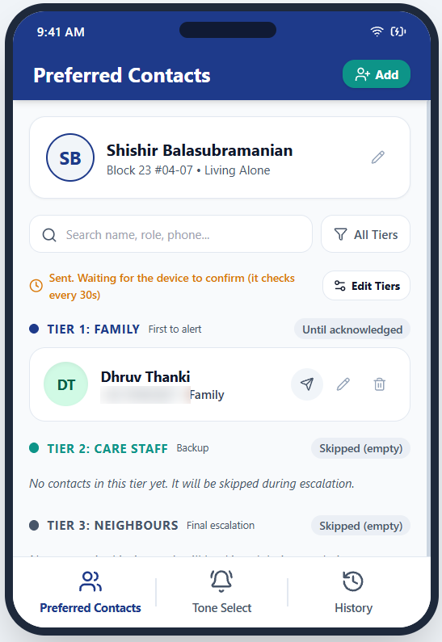
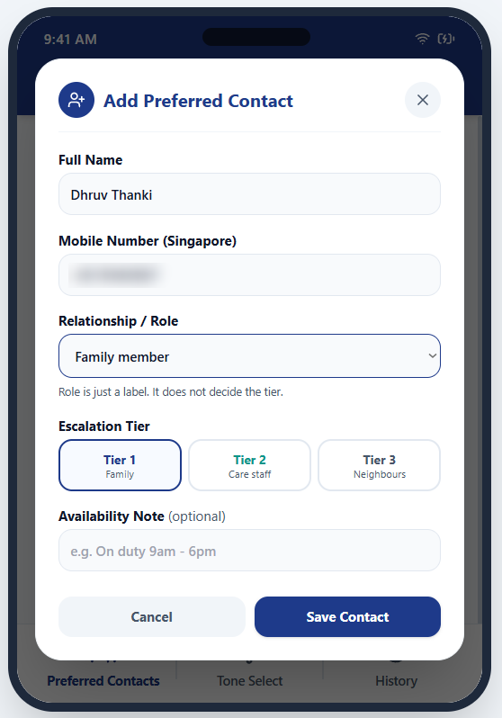
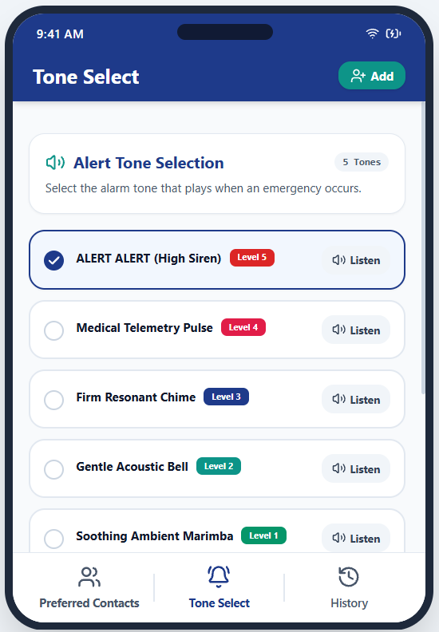
Figure 6.15. Version 1 of the companion app.
| Issue | Why it matters | Fix |
|---|---|---|
| Shared interface is crowded | Seniors and caregivers need different things | Separate senior and caregiver apps |
| Ambiguous add button | Users could not tell whether they were adding a caregiver or a senior | Role-specific set-up |
| No role permissions | Any caregiver could change the senior’s contacts | Only the senior manages contacts |
| Redundant tone select | Tone matters only for soft check-ins | Remove it |
| Unneeded phone number field | Contacts are linked through the app | Remove it |
The key finding was that seniors and caregivers need different interfaces. Letting caregivers edit the care team also undermined the Autonomy principle.
6.5.2Version 2: Split Senior and Caregiver Flows
Version 2 splits the app into senior and caregiver flows. The senior owns their care team and its tiers, and caregivers receive and acknowledge alerts. Figure 6.16 shows how each issue in Table 6.12 was fixed.
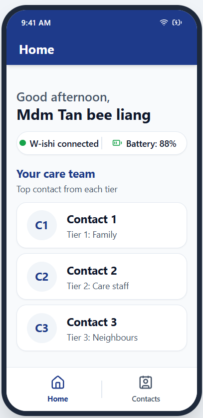
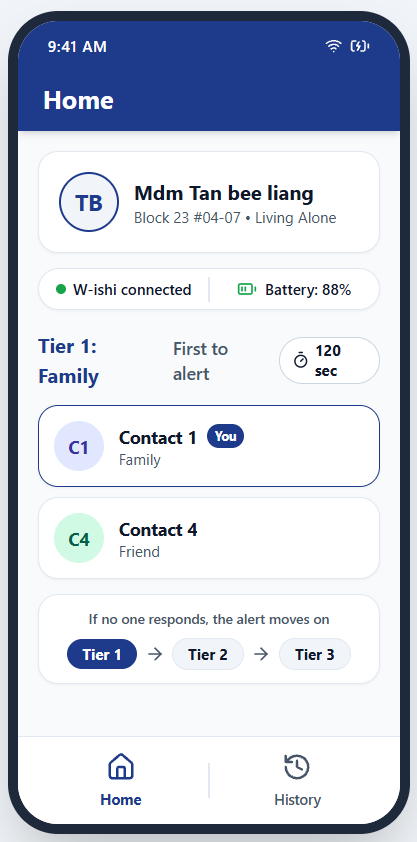
- Issue
- One shared interface was crowded, because seniors and caregivers need different things.
- Fix
- Separate senior and caregiver flows. The senior sees their care team; the caregiver sees the alert path.
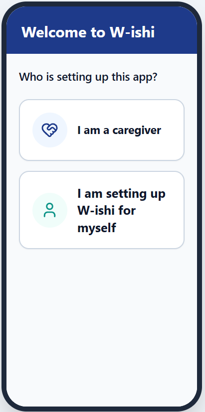
- Issue
- Users could not tell whether “Add” added a caregiver or a senior.
- Fix
- The app asks who is setting it up before anything else.
- Issue
- Any caregiver could change or delete the senior’s contacts.
- Fix
- Only the senior manages the care team, which protects their Autonomy.
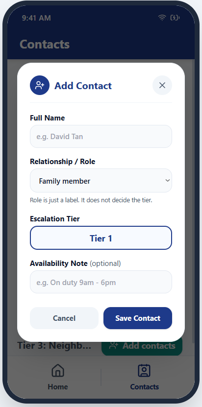
- Issue
- The tone select mattered only for soft check-ins, and the phone number was unneeded because contacts link through the app.
- Fix
- Both removed.
Figure 6.16. Each issue from the expert review, before and after. Tap a tab to switch.
6.5.3Notification and Escalation Logic
Each tier holds its own contacts and a wait time, set to two minutes in testing. An alert goes to Tier 1 (family). If no one acknowledges in time it moves to Tier 2 (care staff) and then Tier 3 (neighbours), who are asked to check in person. The first acknowledgement stops the escalation and turns the token’s LED green (Figure 6.17).
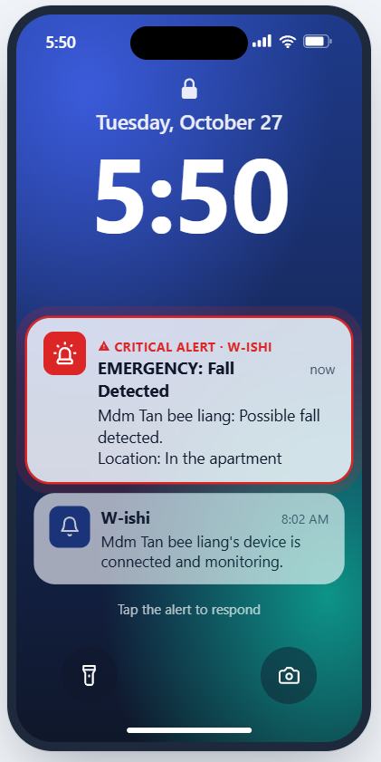
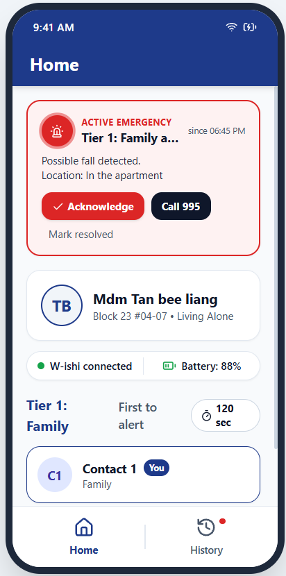
Figure 6.17. A caregiver receiving an alert in Version 2.
Prototyping and Testing (Shishir)
7.1Prototype Build
Version 1 paired an ESP32-S3 DevKitC-1 with an MPU-6050 to develop the detection code. Version 2 moved to the smaller XIAO ESP32-S3 and added the ML307A, powered from a 5 V, 2 A bench supply. All tests in Section 7.3 used Version 2.
Why the MPU-6050. The final token uses the LSM6DSO (Section 6.3.1), but the prototype only had to develop the detection logic. Its thresholds are in g and carry over to any IMU.
Its 3.9 mA draw was an accepted trade-off while the prototype ran from a bench supply.
Wiring. The MPU-6050 connects over I²C to D4 (SDA) and D5 (SCL). The ML307A connects over UART to D2 (TX) and D1 (RX). All parts share a common ground (Figure 7.2).
Watch the prototype come together.
Simplified 3D models at real scale, laid out as on the Version 2 breadboard.
7.2Test Plan and Methods
Each test checks specifications in Table 4.3 (Table 7.1).
| Test | Method | Sample |
|---|---|---|
| Fall detection | Peak acceleration for falls (pocket, bag, stick), sits and walks | 75 trials |
| Location | Fixes outdoors, in a corridor and in a lab | 15 fixes |
| Alert latency | Time to Tier 1, then left unanswered | 10 alerts |
| Power | Idle current of the whole prototype | 1 prototype |
| Form and comfort | Seniors ranked shapes, weights and chargers | 10 seniors |
7.3Results
7.3.1Fall Detection
Method. We ran 15 trials in each of five scenarios: falls with the token in a pocket, in a bag and on a walking stick, plus sitting down and walking.
| Scenario | Median peak | Result | Outcome |
|---|---|---|---|
| Pocket fall | 2.6 g | 15/15 caught | Pass |
| Bag fall | 2.4 g | 13/15 caught | Below target |
| Stick fall | 7.2 g | 13/15 caught | Below target |
| Sitting down | 3.8 g | 2/15 flagged | Below target |
| Walking | 1.3 g | 1/15 flagged | Pass |
| All falls | 41/45 caught (91%) | Pass | |
| All everyday movements | 27/30 ignored (90%) | Pass |
Figure 7.3. Peak acceleration by scenario against the two detection windows.
Both totals met the 90% target. Bag and stick falls varied with how they landed, and two gentle sits entered Window A. These trials ran before the stillness check was added, and it should remove most false alarms. False alerts erode trust in the device and need further study across more scenarios and carrying positions.
7.3.2Location
Method. We requested five GNSS fixes outdoors, in a covered corridor and inside the lab.
| Place | Fixes | Mean error | Meets ≤ 10 m? |
|---|---|---|---|
| Open space | 5/5 | 5.04 m | Yes |
| Covered corridor | 2/5 | 13.46 m | No |
| Inside the lab | 0/5 | No fix | No |
Mean GNSS error by location against the 10 m target.
Outdoor fixes were all within 8 m and took about 32 s from a cold start and 4 s from a warm start. Concrete blocks the weak signal, and Semester 2 adds an active antenna and a home-address fallback.
7.3.3Alert Latency and Escalation
We triggered ten alerts with the modem warm. All ten reached Tier 1 in about 24 s and escalated to Tier 2 after two minutes unanswered.
7.3.4Power
Method. We measured the average current of the whole prototype while idle, waiting for a fall.
| Component | State | Current |
|---|---|---|
| ML307A-GSLN | Standby, always on | 17.6 mA |
| MPU-6050 | 6-axis, always on | 3.9 mA |
| XIAO ESP32-S3 and regulators | Awake, polling the sensor | ≈9.5 mA |
| Total | ≈31 mA |
The prototype drew about 31 mA, more than eleven times the 2.7 mA target. The modem in standby accounts for more than half. The MPU-6050 has to be polled for every sample, which keeps the microcontroller awake for most of the rest. Section 6.3.3 removes each of these loads.
7.3.5Form, Comfort and Set-up (Zhou Chunshi)
Method. Ten seniors aged 62 to 83 ranked four shape models, four clay weight models from 30 to 60 g and two charging methods.
Comfort was rated 3.8 out of 5, just below the target of 4, and a family member set up the app unaided in 2 minutes. Ten seniors is a small sample, and wear trials will retest these choices.
7.4Results Against Specifications
| Test | Target | Result | Status |
|---|---|---|---|
| Fall detection | ≥ 90% caught and ignored | 91% and 90% | Pass |
| SOS button press | 2–3 N | Not yet tested | Untested |
| Outdoor location | ≤ 10 m | 5.04 m mean | Pass |
| Indoor location | Location reaches the contact | 2/10 fixes | Fail |
| Alert to Tier 1 | ≤ 30 s | ≈24 s, 10/10 | Pass |
| Escalation to Tier 2 | At 2 min | 10/10 | Pass |
| Average current | ≤ 2.7 mA | ≈31 mA | Fail |
| Battery life | ≥ 7 days | Battery not chosen | Untested |
| LED cues understood | ≥ 4 of 5 seniors | Not yet tested | Untested |
| Weight | ≤ 40 g | Final shell not yet built | Untested |
| Family set-up | ≤ 5 min unaided | 2 min | Pass |
| Comfort and weight | ≥ 4 of 5 comfortable | 3.8 / 5 | Fail |
| Drop and splash | 1 m drop and splashes | Not yet tested | Untested |
Discussion and Shortcomings
8.1Electrical (Shishir)
The prototype proves the full chain from fall to escalation. It does not yet prove that the chain runs from a battery inside a 40 g token or works indoors. Power comes first in Semester 2 because the battery, PCB and shell all depend on it.
8.2Mechanical and App (Dhruv)
Most mechanical and app checks are still to come (Table 8.2).
| Shortcoming | Why it matters | Semester 2 fix |
|---|---|---|
| Shell not drop or splash tested | Seams, button and charger may leak | Drop and IEC 60529 splash tests |
| Attachments untested | A clip that slips loses the token | Retention and fatigue tests |
| Few materials tested | Choices rest on datasheets only | Test printed samples |
| LED not fitted in the shell | Cues cannot yet be judged | Fit it and test with 5 seniors |
| App not tested with seniors | Version 2 may still confuse | Usability tests with residents |
| No wear trials | Comfort over days is unknown | Week-long wear trials at HV and LB |
Plan for Semester 2 (Dhruv)
9.1Work Packages per Subsystem
| Subsystem | Work |
|---|---|
| Electrical | Low-power sensor and battery, fall detection threshold, indoor location fallback, custom PCB |
| Mechanical | Shell CAD V2, 3D prints and fit checks, drop, splash and button tests |
| App and backend | Alerts and escalation backend, full alert loop test |
| Ergonomics | Feel and weight tests, LED cue tests, wear trials at HV and LB |
9.2Timeline and Milestones
Semester 1. Workshops (24–27 August), stakeholder talks (31 August), problem statement (11 September), concepts (to 2 October), user feedback (9 October), prototyping (from 12 October), interim (13 November).
Semester 2. Week 1 starts in the second week of January, with a recess after week 6 (Appendix C).
- Weeks 1–3Choose low-power sensor and battery, shell CAD V2 (fits PCB and LED), feel and weight tests with seniors, fall detection tests begin. Goal: ≤ 2.7 mA.
- Weeks 4–6Fall detection tests and threshold, location tests and indoor fallback, custom PCB started, alerts and escalation backend, 3D prints and fit checks, mid-semester review (week 6). Goal: indoor location and backend.
- Weeks 7–11Backend and fit checks finished (week 7), custom PCB by week 9, drop, splash and button tests, full alert loop test (weeks 10–11). Goal: 1 m drop and splash.
- Weeks 11–13Wear trials at HV and LB with the token worn in every position (weeks 11–12), LED cue tests (week 12), final presentation (week 13). Goal: no false alerts in any wear position.
9.3Risks and Mitigations
| Risk | Mitigation |
|---|---|
| Battery cannot supply 2 A bursts | High-discharge cell and bulk capacitors (Section 6.3.3) |
| The custom PCB is late | Order by week 6; breadboard as fallback |
| No GNSS fix indoors | Send the last fix and home address |
| The token exceeds 40 g | Weigh every revision and size the cell to fit |
| Shell not ready for wear trials | Continue fall trials in pocket, bag and stick positions |
| Too few residents join wear trials | Recruit early at HV and LB |
9.4Budget and Procurement
Semester 1 parts cost about $37. The full plan for both semesters totals about $205 of the $3,200 budget, leaving about $2,995 (Appendix B).
Conclusion
The 2 September fall showed that a senior living alone needs help that arrives even when they cannot press a button and their usual responder is busy. Co-design with 40 residents shaped W-ishi: a discreet token that detects a fall, lets the senior cancel and escalates from family to care staff to neighbours. Every design choice traces back to the five core values (Table 4.2). The prototype meets its targets for fall detection, outdoor location and alert time, and Semester 2 tackles power and indoor location before wear trials.
References
- A7670E 4G LTE module user manual. (n.d.). Manuals+. https://manuals.plus/ae/1005005023332752
- Age Well SG. (n.d.). Active ageing. https://agewellsg.gov.sg/active-ageing
- Analog Devices. (n.d.). ADXL345: 3-axis, ±2 g/±4 g/±8 g/±16 g digital accelerometer [Product page]. https://www.analog.com/en/products/adxl345.html
- Ang, G. C., Low, S. L., & How, C. H. (2020). Approach to falls among the elderly in the community. Singapore Medical Journal, 61(3), 116–121. https://doi.org/10.11622/smedj.2020029
- Apple Inc. (n.d.). Apple Watch Series 12: Technical specifications. Apple.
- Apple Inc. (2021, April 20). Apple introduces AirTag [Press release]. Apple Newsroom.
- Apple Inc. (2026a, September 10). Introducing Apple Watch Series 12, with the all-new Health Sensing System [Press release]. Apple Newsroom (Singapore).
- Apple Inc. (2026b). Use Fall Detection with Apple Watch. Apple Support. https://support.apple.com/en-us/108896
- Ashby, M. F. (2017). Materials selection in mechanical design (5th ed.). Butterworth-Heinemann.
- Bosch Sensortec. (2026). BMI270 datasheet (Document BST-BMI270-DS000-08, Rev. 1.6). https://www.bosch-sensortec.com/media/boschsensortec/downloads/datasheets/bst-bmi270-ds000.pdf
- Casilari, E., & Silva, C. A. (2022). An analytical comparison of datasets of real-world and simulated falls intended for the evaluation of wearable fall alerting systems. Measurement, 202, 111843. https://doi.org/10.1016/j.measurement.2022.111843
- China Mobile. (n.d.). ML307A-GSLN [Product page, LCSC C48982536]. LCSC Electronics. https://www.lcsc.com/product-detail/C48982536.html
- CNA. (2017). Singapore’s 2G network to cease completely on April 18. https://www.channelnewsasia.com/singapore/singapores-2g-network-cease-completely-april-18-5764621
- CNA Insider. (2024). What happens after someone dies alone? Dead alone in Singapore, Part 2/3 [Video]. CNA.
- Connell, B. R., Jones, M., Mace, R., Mueller, J., Mullick, A., Ostroff, E., Sanford, J., Steinfeld, E., Story, M., & Vanderheiden, G. (1997). The principles of universal design (Version 2.0). The Center for Universal Design, North Carolina State University.
- Covestro. (n.d.). Bayblend PC-ABS technical information. Covestro AG.
- Ding, H., Ho, K., Searls, E., Low, S., Li, Z., Rahman, S., Madan, S., Igwe, A., Popp, Z., Burk, A., Wu, H., Ding, Y., Hwang, P. H., De Anda-Duran, I., Kolachalama, V. B., Gifford, K. A., Shih, L. C., Au, R., & Lin, H. (2024). Assessment of wearable device adherence for monitoring physical activity in older adults: Pilot cohort study. JMIR Aging, 7, e60209. https://doi.org/10.2196/60209
- EIM-306. (n.d.). Designing for community wellbeing [Unpublished CDE3301 project]. College of Design and Engineering, National University of Singapore.
- ESP32-C3 SuperMini datasheet. (n.d.). ArtronShop. https://dl.artronshop.co.th/ESP32-C3%20SuperMini%20datasheet.pdf
- Espressif Systems. (n.d.). ESP32-S3-DevKitC-1 v1.1 user guide. https://asset.conrad.com/media10/add/160267/c1/-/gl/002685021DS00/datablad-2685021-espressif-developmentboard-esp32-s3-devkitc-1-n8r8.pdf
- Fitts, P. M. (1954). The information capacity of the human motor system in controlling the amplitude of movement. Journal of Experimental Psychology, 47(6), 381–391. https://doi.org/10.1037/h0055392
- Harte, R., Glynn, L., Broderick, B., Rodriguez-Molinero, A., Baker, P., McGuiness, B., O’Sullivan, L., Diaz, M., Quinlan, L., & ÓLaighin, G. (2014). Human centred design considerations for connected health devices for the older adult. Journal of Personalized Medicine, 4(2), 245–281. https://doi.org/10.3390/jpm4020245
- Hoffman, J., Lee, S., Lee, Y., & Lutwak, M. (2020). Body Buddy: Fall detection device for elders [18-500 final report]. Department of Electrical and Computer Engineering, Carnegie Mellon University.
- HoneyCare. (2023). MyGuardian Home (XC-8000) specification (Version 1.1).
- Housing & Development Board. (2021). Annex A1: February 2021 BTO exercise. HDB.
- iMalive. (2025). Seniors living alone in Singapore: The statistics (2025). iMalive.
- International Electrotechnical Commission. (2013). Degrees of protection provided by enclosures (IP code) (IEC 60529:1989+AMD2:2013).
- International Organization for Standardization. (2016). Textiles: Determination of the abrasion resistance of fabrics by the Martindale method. Part 2: Determination of specimen breakdown (ISO 12947-2:2016).
- International Organization for Standardization. (2019). Rubber, vulcanized or thermoplastic: Determination of compression set. Part 1: At ambient or elevated temperatures (ISO 815-1:2019).
- InvenSense. (2012). MPU-6000 and MPU-6050 register map and descriptions (Document RM-MPU-6000A-00, Rev. 4.0). https://cdn.sparkfun.com/datasheets/Sensors/Accelerometers/RM-MPU-6000A.pdf
- Jefiza, A., Pramunanto, E., Boedinoegroho, H., & Purnomo, M. H. (2017). Fall detection based on accelerometer and gyroscope using back propagation. In Proceedings of the 4th International Conference on Electrical Engineering, Computer Science and Informatics (EECSI) (pp. 418–423). https://doi.org/10.11591/eecsi.4.1079
- Kangas, M., Konttila, A., Lindgren, P., Winblad, I., & Jämsä, T. (2008). Comparison of low-complexity fall detection algorithms for body attached accelerometers. Gait & Posture, 28(2), 285–291.
- Li, Y., Liu, P., Fang, Y., Wu, X., Xie, Y., Xu, Z., Ren, H., & Jing, F. (2025). A decade of progress in wearable sensors for fall detection (2015–2024): A network-based visualization review. Sensors, 25(7), 2205. https://doi.org/10.3390/s25072205
- Lions Befrienders Service Association (Singapore). (2025). Active Ageing Centre. Lions Befrienders.
- M5Stack. (2026). SIM800L module (SKU M004) [Product page]. Mouser Electronics. https://www.mouser.com/datasheet/3/3804/1/sim800.pdf
- Matchar, D. B., Duncan, P. W., Lien, C. T., Ong, M. E. H., Lee, M., Gao, F., Sim, R., & Eom, K. (2017). Randomized controlled trial of screening, risk modification, and physical therapy to prevent falls among the elderly recently discharged from the emergency department to the community: The Steps to Avoid Falls in the Elderly study. Archives of Physical Medicine and Rehabilitation, 98(6), 1086–1096. https://doi.org/10.1016/j.apmr.2017.01.014
- Ministry of Health. (n.d.). Ageing in the community. MOH.
- Ministry of Health. (2020, December 10). Community Care Apartments [Press release]. MOH.
- Ministry of Health. (2023a, January 30). Launch of the 2023 Action Plan for Successful Ageing. https://www.moh.gov.sg/newsroom/launch-of-the-2023-action-plan-for-successful-ageing/
- Ministry of Health. (2023b, November 16). Age Well SG to support our seniors to age actively and independently in the community. MOH.
- Ministry of Health. (2024, October 12). Good progress in the implementation of Age Well SG. https://www.moh.gov.sg/newsroom/good-progress-in-the-implementation-of-age-well-sg/
- Ministry of Health. (2025, October 15). Data on seniors aged 65 and above living alone and plans for new initiatives to prevent unattended deaths [Parliamentary written answer]. https://www.moh.gov.sg/newsroom/data-on-seniors-aged-65-and-above-living-alone-and-plans-for-new-initiatives-to-prevent-unattended-deaths/
- Ministry of Health. (2026). Age eligibility for Community Care Apartments lowered from 65 to 55 years old; monthly fees reduced by 18% to 75% with new subsidies. MOH.
- National Population and Talent Division. (2025). Population in brief 2025. Strategy Group, Prime Minister’s Office.
- Palmerini, L., Klenk, J., Becker, C., & Chiari, L. (2020). Accelerometer-based fall detection using machine learning: Training and testing on real-world falls. Sensors, 20(22), 6479. https://doi.org/10.3390/s20226479
- PJRC. (n.d.). Teensy 4.1 development board. https://www.pjrc.com/store/teensy41.html
- Prusa Research. (n.d.). Filament material guide. https://help.prusa3d.com/filament-material-guide
- SecuLife. (n.d.). Senior life alert pendant: Fall detection and SOS. SecuLife.
- Seeed Studio. (n.d.). Getting started with Seeed Studio XIAO nRF52840. Seeed Studio Wiki. https://wiki.seeedstudio.com/XIAO_BLE/
- Seeed Technology. (2026). Seeed Studio XIAO ESP32-S3: Industrial product datasheet (SKU 100092361). Mouser Electronics. https://www.mouser.lt/datasheet/3/1361/1/100092361.pdf
- SIMCom Wireless Solutions. (n.d.). SIM7080G [Product page]. https://www.simcom.com/product/SIM7080G.html
- Singapore Department of Statistics. (2025). Residents aged 65 years and over in resident households by living arrangement and age group, annual [Dataset]. data.gov.sg.
- STMicroelectronics. (2024). LSM6DSO: iNEMO inertial module, always-on 3-axis accelerometer and 3-axis gyroscope (Datasheet DS12140, Rev. 3).
- Thilo, F. J. S., Bilger, S., Halfens, R. J. G., Schols, J. M. G. A., & Hahn, S. (2016). Involvement of the end user: Exploration of older people’s needs and preferences for a wearable fall detection device. Patient Preference and Adherence, 11, 11–22. https://doi.org/10.2147/PPA.S119177
- Tseng, C.-K., Huang, S.-J., & Kau, L.-J. (2025). Wearable fall detection system with real-time localization and notification capabilities. Sensors, 25(12), 3632. https://doi.org/10.3390/s25123632
- U.S. Department of Justice. (2010). 2010 ADA standards for accessible design. https://www.ada.gov/law-and-regs/design-standards/2010-stds/
- Vanguard Healthcare. (n.d.). Community Care Apartments. Vanguard Healthcare Pte Ltd.
- Xu, T., Sun, W., Lu, S., Ma, K., & Wang, X. (2019). The real-time elderly fall posture identifying scheme with wearable sensors. International Journal of Distributed Sensor Networks, 15(11). https://doi.org/10.1177/1550147719885616
- Yap, G. (2026, September 10). Elderly woman, 85, falls down in shower at Bukit Batok community care apartment, pressed call bell but no help for 2 hours. Mothership.SG.
Appendices
Appendix A. Prototype testing questionnaire
Ten seniors aged 62 to 83 (six women, four men). We recorded age, gender, mobility aids and any hand or dexterity issues, then asked them to:
Rate carrying comfort for the 30, 40, 50 and 60 g models and name the heaviest they would wear daily.
Rate hand comfort and pocketability for the four shapes and pick a first and second choice.
Compare how easily they could aim and attach USB-C and the magnetic pogo connector.
Say what worried them or what they liked about the shapes and weights.